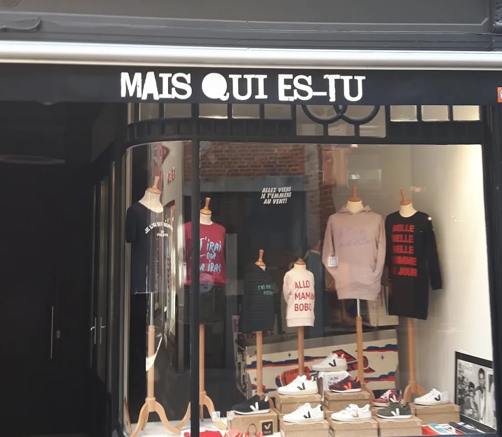
T-shirts et sweats à messages
La signature de la marque, en coton bio, pour les grands comme pour les petits.
Vêtements à messages · piétonnier de Namur
Des t-shirts et des sweats à messages en coton bio, des chemises, des chaussettes qui font sourire et des baskets, rue de la Croix 54. Une marque namuroise lancée en 2011, pour toute la famille.
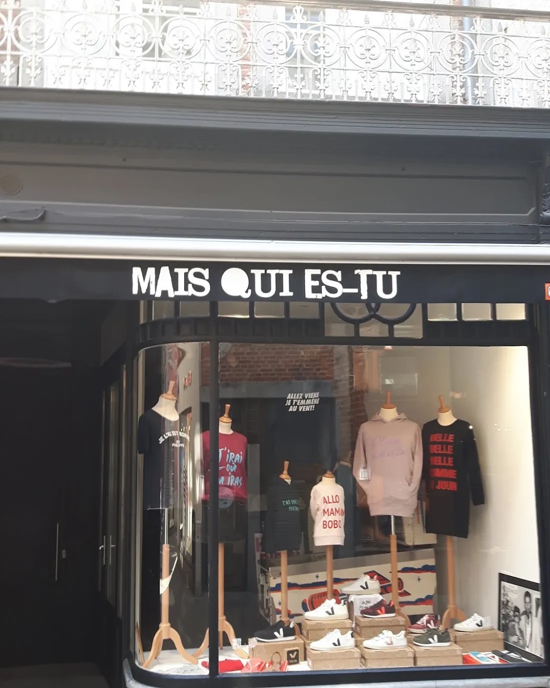
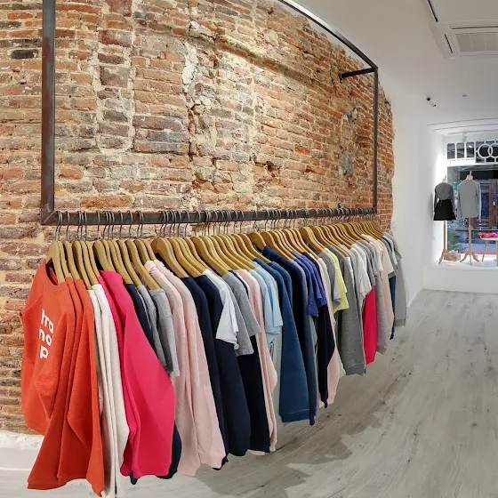
La boutique
Au départ, des t-shirts floqués pour les copains, à leur prénom. Puis des inconnus en ont commandé, jusqu'en Australie et au Brésil. La petite marque namuroise a ouvert sa boutique dans le piétonnier : un grand espace clair, bois blond et mur vert sauge, avec un coin salon devant le mur de baskets.
« […] Super concept, les idées sont originales et vraiment sympas, ça change et ça fait plaisir de découvrir ce genre de boutique surtout sachant que c'est du local ! […] »Julie, avis Google
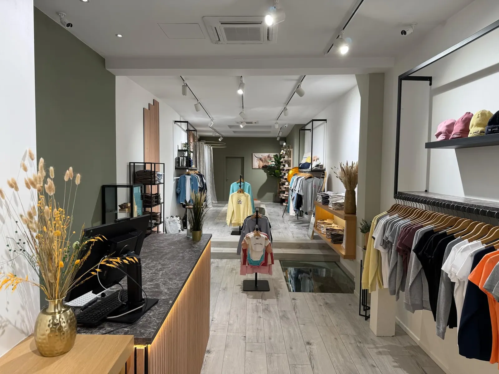
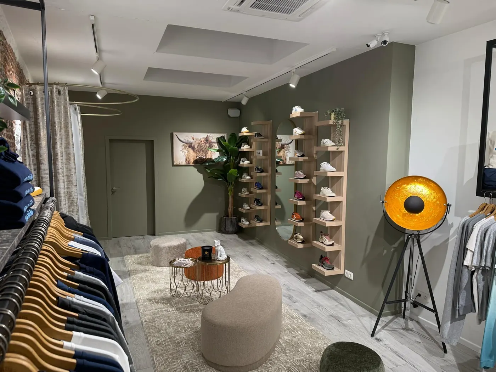
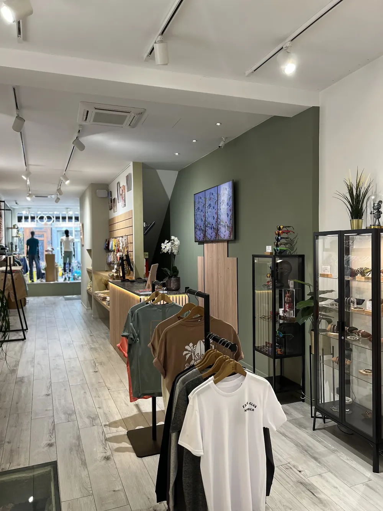
Le mur des messages
Des chansons, des films, des mots de chez nous. Ces messages-là étaient en vitrine et sur les sacs de la boutique.
Messages relevés sur les photos de la vitrine et du tote bag, sur maisquiestu.be et dans Elle Belgique (2017). La collection change : demandez en boutique ce qui est en rayon.
En rayon
Femme, homme, enfant et accessoires : ce que montrent les photos de la boutique.

La signature de la marque, en coton bio, pour les grands comme pour les petits.
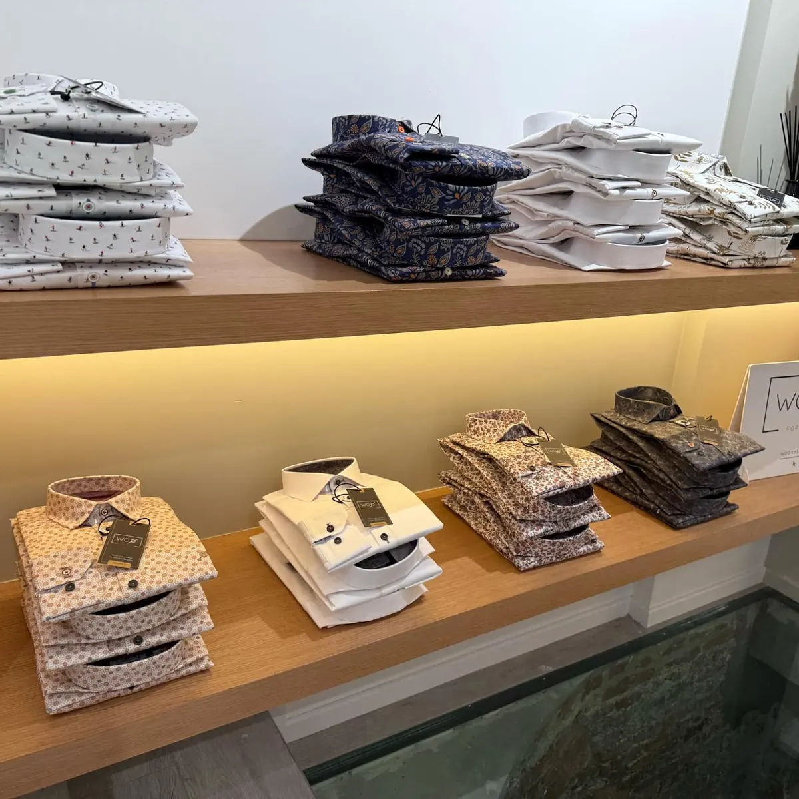
Pliées par piles sur le comptoir éclairé : feuillages, petits imprimés, blanc et bleu nuit.
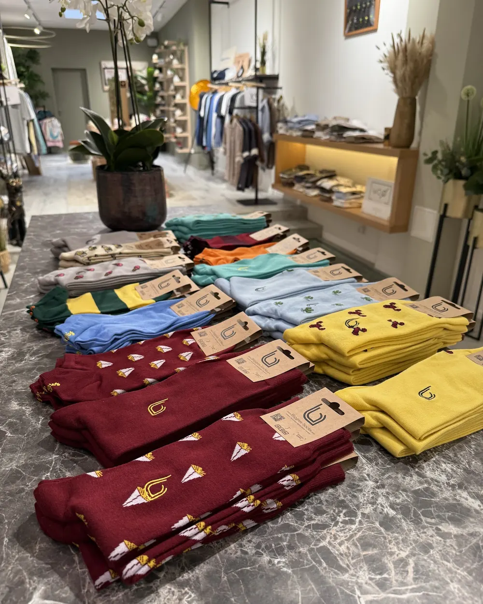
Avions en papier, cornets de glace, ananas : de toutes les couleurs, étalées sur le marbre.
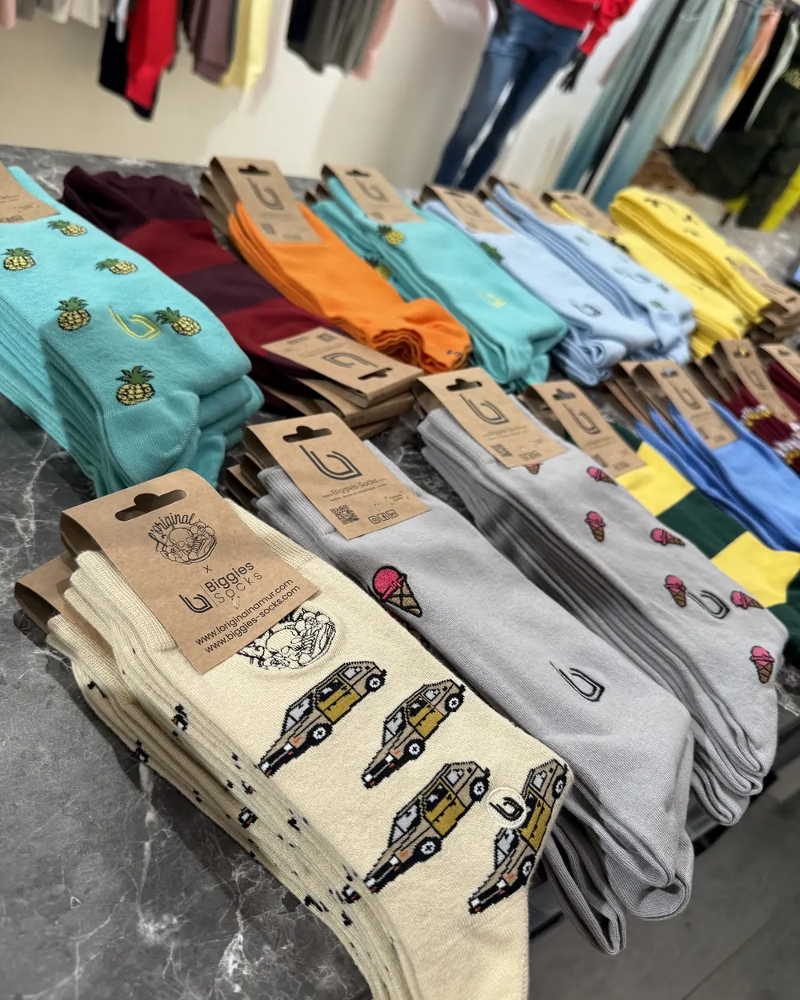
Une série signée avec L'Original, une autre adresse namuroise.
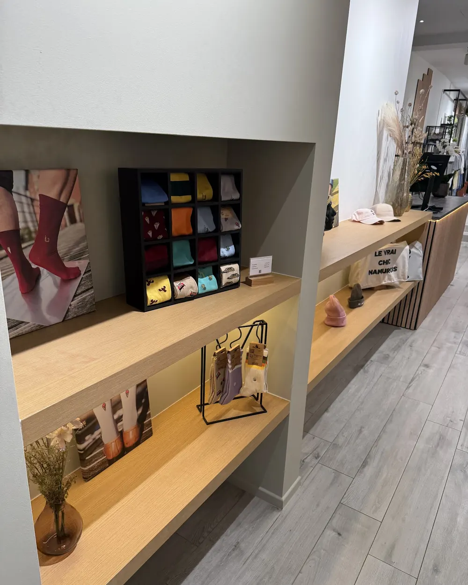
Dont le tote « Le vrai chic namurois ».
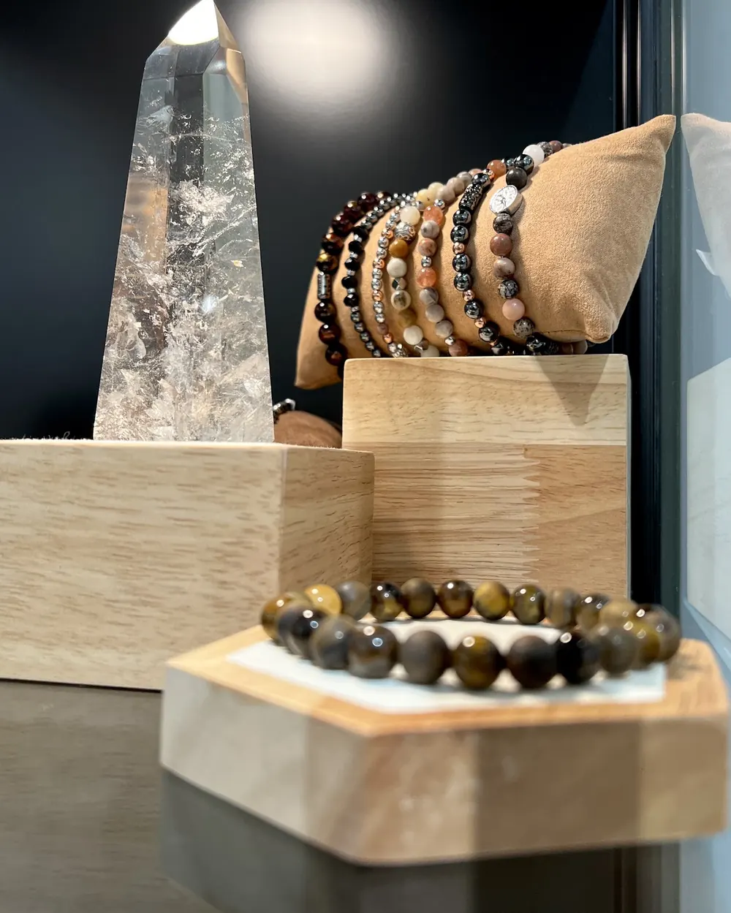
Perles brunes et dorées, présentées sur bois clair.
Faites glisser pour voir les rayons
Les matières
Coton biologiqueTout le coton utilisé par la marque est bio : moins d'eau, et doux au toucher.
Polyester recycléLe polyester des collections est principalement recyclé.
Fair Wear FoundationLe fournisseur textile est membre de cette fondation qui suit les conditions de travail dans les ateliers.
Coton bio, modal, tencelLes matières écologiques que la marque privilégie.
Engagements tels que la marque les présente sur maisquiestu.be.
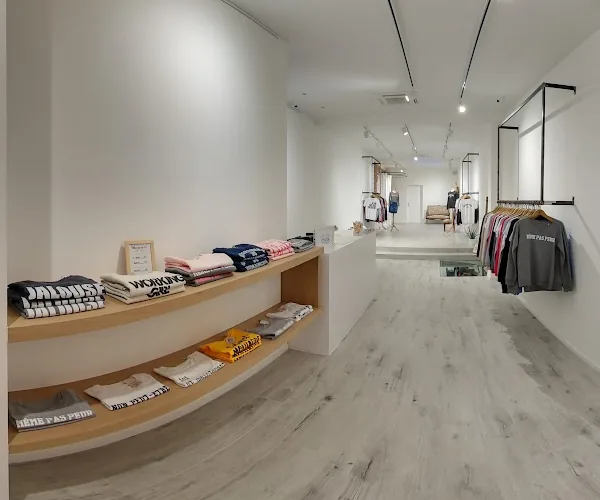
« Tout ce qui y est exposé est de fabrication Belge et de qualité. »Anne M., avis Google
Passer en boutique
Vu en vitrine ou sur Instagram : dites quel article, quelle taille et quel jour vous passez. La boutique le met de côté ou prépare l'essayage.
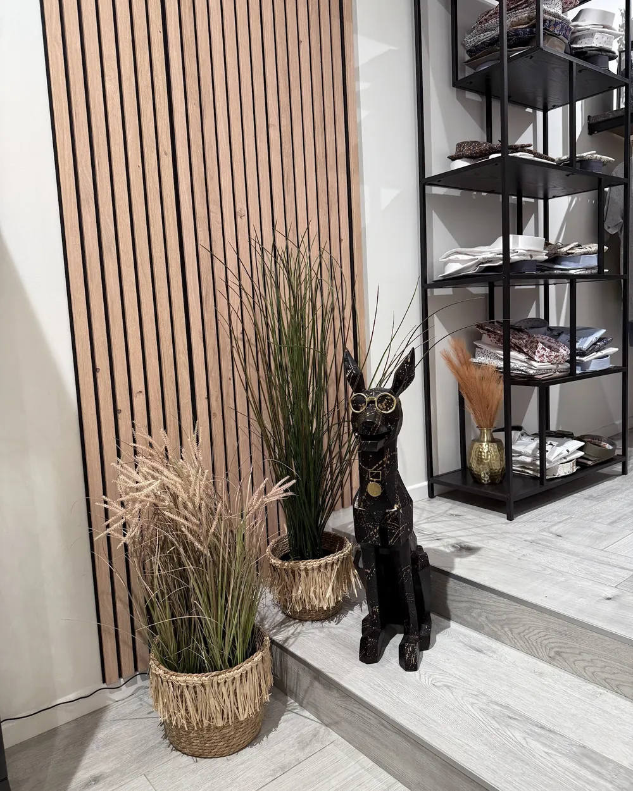
Le gardien de la boutique
« Boutique élégante et surveillée par Tobby 😉. Mais qui est-il ? Le joli chien assis à lunettes 🤭. »Anne M., avis Google
Avis
Ce que les clients écrivent sur Google après être passés rue de la Croix.
Horaires et accès
Du mercredi au samedi, 11 h 30 – 18 h 30
| lundi | fermé |
|---|---|
| mardi | fermé |
| mercredi | 11 h 30 – 18 h 30 |
| jeudi | 11 h 30 – 18 h 30 |
| vendredi | 11 h 30 – 18 h 30 |
| samedi | 11 h 30 – 18 h 30 |
| dimanche | fermé |
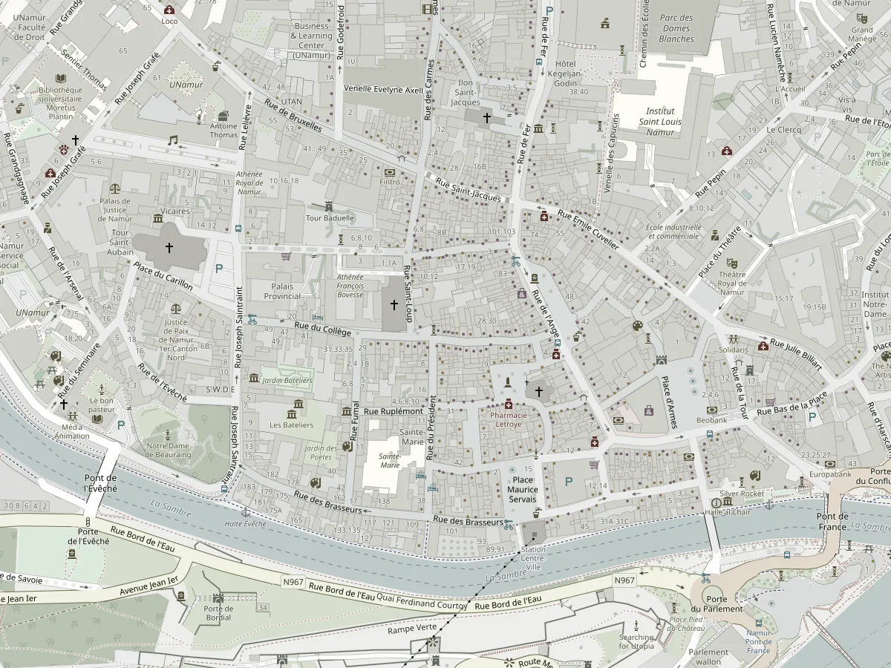
Itinéraire © OpenStreetMap